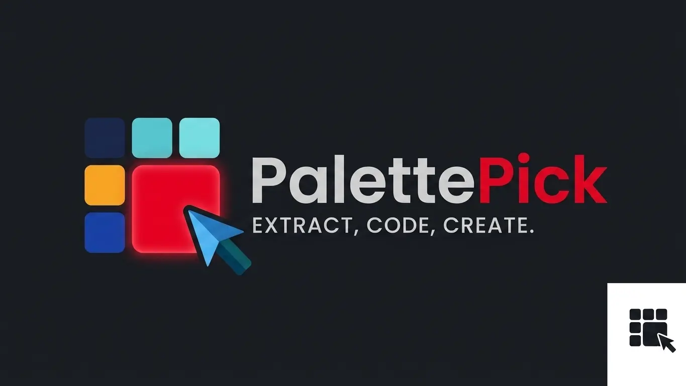
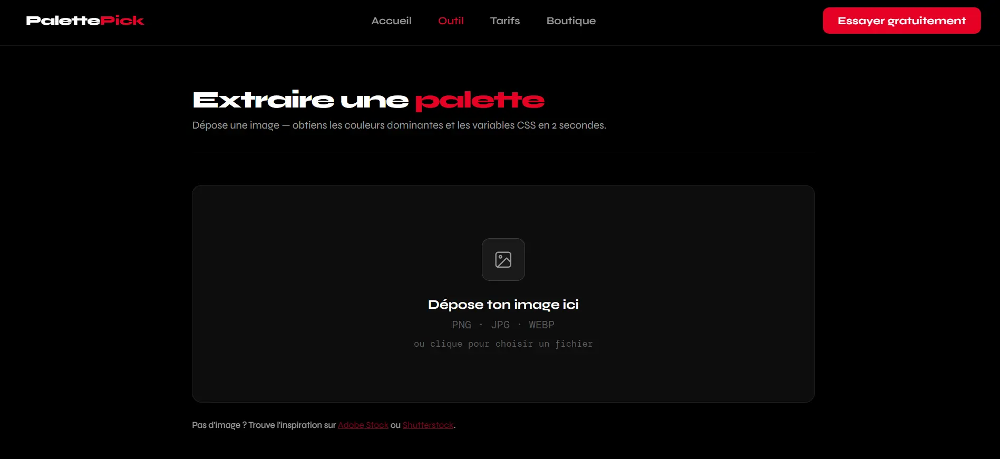

Publié le 20 Avril 2026

Vous avez une image parfaite… mais vous ne savez pas quelles couleurs utiliser ? Bonne nouvelle : vous pouvez générer une palette complète en quelques secondes.
Que vous soyez développeur, designer ou créateur de contenu, extraire les bonnes couleurs d'une image est essentiel pour garder une cohérence visuelle.
Et aujourd'hui, vous n'avez plus besoin de le faire manuellement.
Une image contient déjà une harmonie naturelle de couleurs. L'exploiter vous permet de :
En résumé : vous partez d'un visuel réel au lieu de deviner.
Plutôt que d'utiliser des outils complexes, vous pouvez utiliser un générateur automatique.
Voici comment faire :
"En quelques secondes, vous passez d'une image à un système de couleurs exploitable."
Pour aller plus vite, vous pouvez utiliser PalettePick.
C'est un outil web gratuit qui permet de :
Avantage important : tout se fait en local. Vos images ne sont jamais envoyées sur un serveur.
👉 Essayez maintenant et générez votre palette en quelques secondes.
Imaginez que vous créez un site web pour un client avec une image principale.
Au lieu de choisir des couleurs au hasard :
Résultat : un rendu plus esthétique… et un client satisfait.
Générer une palette de couleurs à partir d'une image est aujourd'hui une étape incontournable en design et développement web.
Avec les bons outils, cela prend quelques secondes… et peut transformer complètement votre projet.
Ne perdez plus de temps à deviner vos couleurs. Automatisez le processus.
Ne restez pas bloqué.
Générer ma palette gratuitement